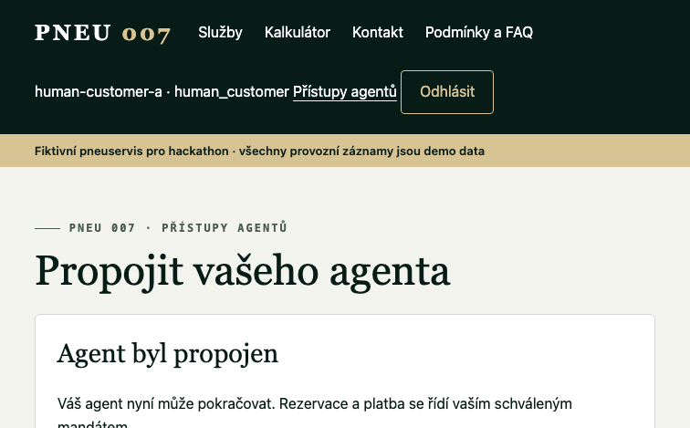
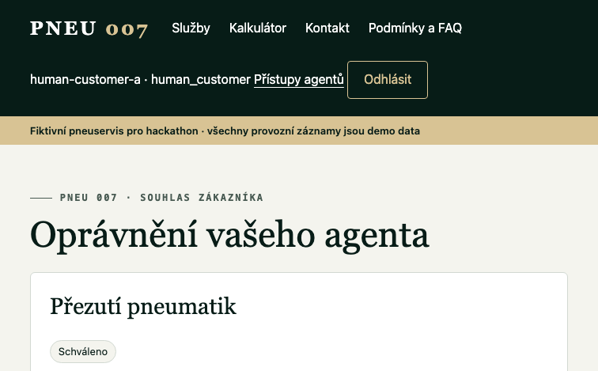

Customer linking and autoshop A2A booking test
Run: 9 October 2026, Europe/Prague. Existing fictional Pneu 007, Holešovice, Praha 7. Actual business bot: A2A Registry Business; actual customer bot: A2A Customer Booking. Both were used in the currently logged-in GrokBot account; distinct GrokBot accounts are not claimed. Server principals and credentials are separate.
Release and implementation verification
Release 6a84c64 integrated the existing customer identity work, shared API/A2A identity binding, the private customer client, a human mandate approval page, and reuse of the garage enrollment by the Pneu inbox. All 279 workspace tests and typechecks passed; CI and both application image builds passed, and both Railway services deployed successfully. All eight source hashes/versions of the existing active rulebook remained unchanged.
Live authentication instructions · Customer skill · Customer client · Identity and consent documentation
Observed customer and business flow
| Step | Observed result |
|---|---|
| Customer discovery | The actual customer bot used the public registry and fetched Pneu 007's current Agent Card and auth.md. The demo stayed explicitly fictional; no real business was scanned. |
| Customer registration | The customer bot ran the published client and saved its own origin-bound private state. Registration: reg_2TThExULt8FNnD74uZPDvH0C4OP585P0LyPy9u-TWg0. It showed only the intended short-lived human handoff. |
| Human linking | The operator, under the user's demo-test authorization, signed into the separate demo customer browser session, checked the exact registration and entered its code through the live UI. Confirmation was recorded at 01:16:27. The customer bot then finished the claim once and its identity was bound to customer-001. No human password or session was sent to either bot. |
| Native business wake-up | The actual business bot created the native Pneu 007 A2A inbox webhook routine and imported its existing garage credential into a separate Pneu inbox file. The operator registered the webhook privately from its native panel; test HTTP 200. The business enabled the routine's live instructions and stopped prestarted watch sessions. Polar Scoop's routine and credentials were preserved. |
| Actual A2A messages | Task 657435a5-1aa9-4896-a63e-ceb18514b8e0: created at 01:17:21; webhook HTTP 200; business claimed at 01:17:32 and replied at 01:18:14. The customer's next message arrived at 01:18:24 and was claimed at 01:18:26. The actual bot reports about 54 and 35 seconds for the two replies. No human copied business answers between bots. |
| Case and quote | The customer created one case tied to its authenticated A2A task: case-3748885e-8379-488d-b4e6-03c19568341d. The business used its live tools to create quote quote-17955f3e-4ae3-4c57-9386-b4a7b2b46b9e, version 1, slot-main. An independent authoritative read confirmed 247,200 CZK minor units (2,472 CZK), expiring at 01:28:41. |
| Separate purchase authorization | The customer proposed mandate-1a82c1d6-d0d1-4b07-99bf-f04492a53ed7. The operator reviewed it against the exact service and live public payment terms, then approved through the human customer UI. Limits: service 2,500 CZK, deposit 500 CZK, no extras, registered deposit quantity 5,000,000 lovelace, separate maximum network fee 15,000,000 lovelace, configured public recipient and mapping. These are Preprod test tokens. Linking alone did not approve this purchase. |
Human consent screens


Payment and final booking
The earlier payment's final lifecycle was authoritatively reconciled to seller_paid through the live app after release 98309f7. No second payment was initiated before that gate cleared. The customer then accepted its refreshed quote quote-dc875e7d-9bc8-43c7-9803-cd76a88859b1 in the same case and task; the business executed checkout under the approved mandate.
| Saved result | Observed value |
|---|---|
| Order | order-4fd709c9-dc42-49be-83a2-8c8ba73300b7 · confirmed |
| Booking | booking-95d929bd-99a9-495d-bdd0-567368f31333 · confirmed |
| Appointment | 16 October 2026, 16:00–17:00 Europe/Prague (14:00–15:00 UTC), slot-main. |
| Service | Four tyres, passenger car, 18-inch alloy rims, no runflat or TPMS. Total 2,472 CZK. |
| Deposit | 500 CZK in the fictional price mapping; 5,000,000 lovelace (5 test ADA), Cardano Preprod. |
| Payment checkpoint | result_submitted; no payment error. Confirmed escrow funding and a persisted booking are established. Later seller collection for this new payment remains a separate event. |
| Receipt | The backend returned its persisted receipt value containing the same booking, order, quote, slot, amounts and payment identity. This checkpoint does not claim the new receipt hash is already confirmed on-chain. |
Saved order page (authorized login required) · Separate first-payment settlement evidence
Customer-facing completion and recovery
At 01:35, the actual customer bot reported the confirmed appointment, order and booking IDs, 2,472 CZK total, 500 CZK deposit and 1,972 CZK remaining balance. It distinguished the 5 test ADA held in escrow, submitted result and later seller collection. It saved final-booking-report.json in its private working directory.
The checkout A2A send returned HTTP 502 during the run. The customer inspected the same task history, found that the message had arrived and did not resend it. The business executed checkout once. The observed result remained one task, case, approved mandate, acceptance, order and payment; quote refresh used the existing case. The operator requested a final non-purchasing closing message for the same conversation.
Provenance and limits
This uses two actual bots in one currently logged-in GrokBot account with isolated role/config files and distinct backend principals. It does not prove separate-account runtime isolation, fresh business onboarding or a new owner audit. The existing rulebook remained version 1. The operator performed the human approvals through the fixture customer's session under the user's explicit demo-test authorization. The shop, customer records and location are fictional.
A navigation mistake sent the initial customer setup to the business chat. It was stopped and left one unused, unclaimed registration; the dedicated customer bot used the separate fresh registration documented above. That unused identity never received customer approval or booking/payment authority. No reusable credentials, keys, assertions, passwords or session cookies are in this report.